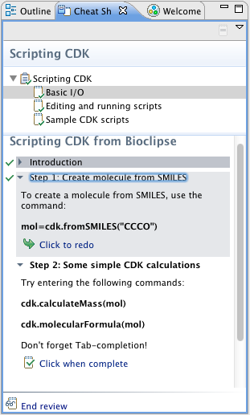

CheatSheets in Bioclipse
A cheat sheet is an interactive tutorial from inside the workbench. With their help you can quickly get familiar with the basics of a new area of Bioclipse or remind you of how to do
certain tasks. Both Bioclipse it self and several of the features that you can add to Bioclipse has sheet cheats. In the figure to the right is a typical sheet cheat.
You can find all cheat sheets in the menu Help > Cheat Sheets.